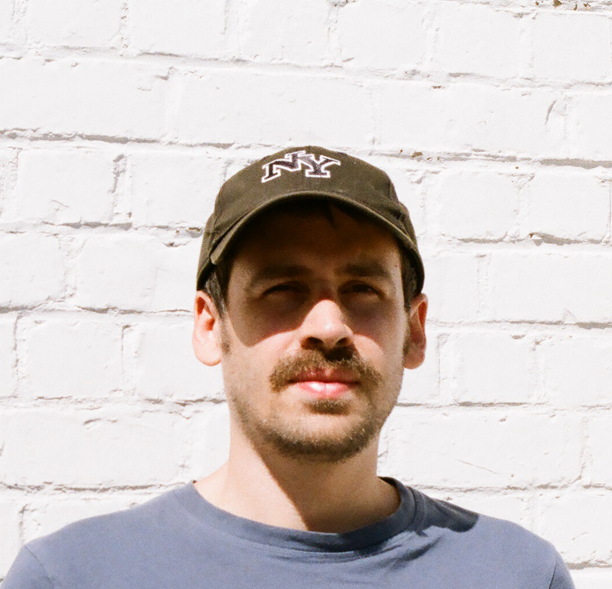

ACASTA GNEISS is an experimental music producer, visual artist, programmer, and DJ based in Brussels. He is the co-founder of Anterior Insula and resident DJ at Kiosk Radio.
For enquiries contact me at anteriorinsulamusic@gmail.com
/////// releases ////////
Glimmer - Acasta Gneiss (2023) | digital and limited C40 cassette tapes released on Anterior Insula
Isolation - Acasta Gneiss (2020) | digital and limited C30 cassette tapes released on Anterior Insula
////// compilations ////////
Bonambi x Nativitas - V/A (2023) | digital only
Collected Sounds for your Anterior Insula - V/A (2021) | digital only
////// installations ////////
25-01-2024 | Stasis : De Week van de Klank ~ La Semaine Du Son
////// selected live ////////
15-02-2023 | Anterior Insula invites @ Het Bos w/ Dian, Acasta Gneiss, Anterior Insula DJs
13-01-2023 | Anterior Insula invites @ Un Peu w/ Reggy Van Bakel, Belle & Maris, Acasta Gneiss
16-07-2022 | Anterior Insula DJs @ Dour Festival
11-02- 2022 | Anterior Insula invites @ Future Intel w/ Acasta Gneiss, Mark IJzerman, Bitterling, Phil Furgusen, Svaer, Outsider Perception Syndrome
////// selected mixes ////////
06-10-2022 | Anterior Insula @ Kiosk Radio
20-02-2022 | Anterior Insula @ Radio Ruit w/ LY Foulidis & Acasta Gneiss
04-01-2022 | Anterior Insula @ Kiosk Radio w/ LY Foulidis & Acasta Gneiss
01-06-2021 | Anterior Insula @ Kiosk Radio w/ Rosetta Glare & Acasta Gneiss
for more information please visit Anterior Insula
